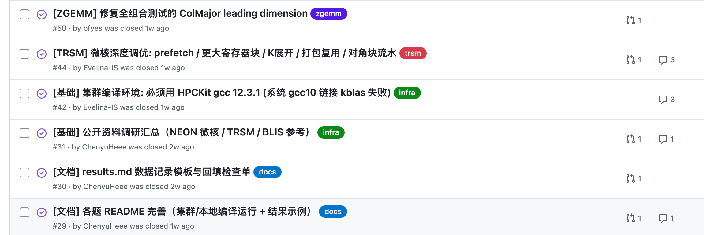
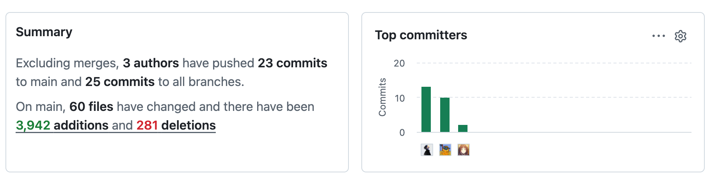
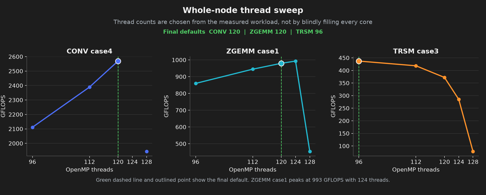
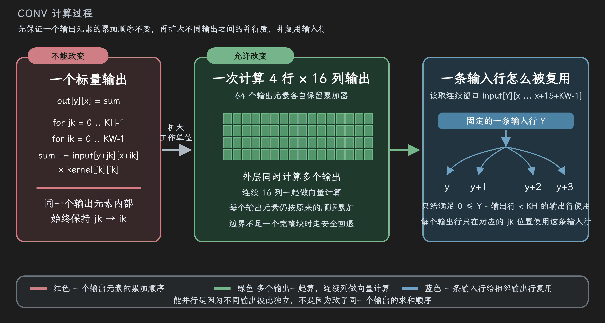
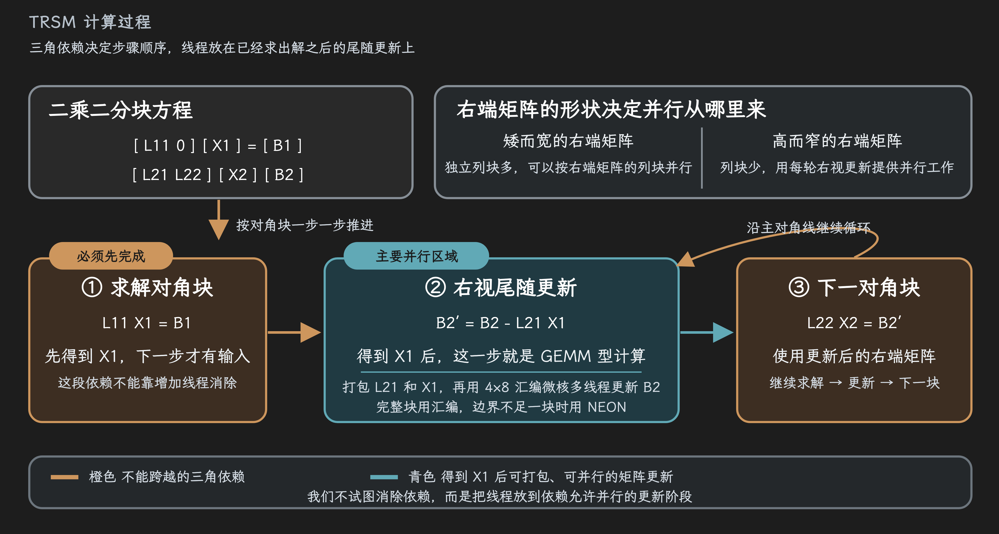
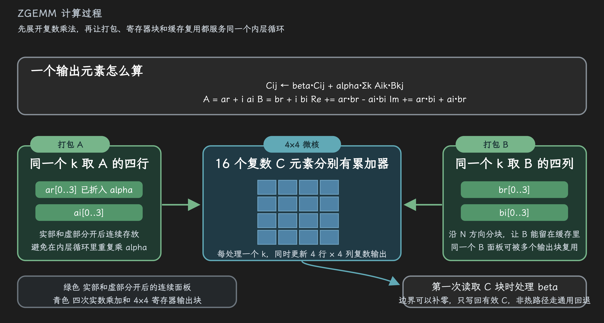
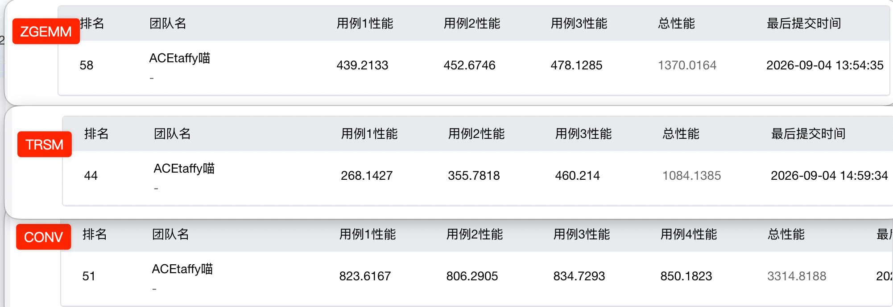

<div class="cover-content"> <h5 class="cover-title">鲲鹏 HPC 挑战赛 S2<br>优化答辩</h5> <strong class="cover-team">参赛队伍 · ACEtaffy喵</strong> <div class="cover-track">CONV / TRSM / ZGEMM</div> <div class="cover-date">2026.9.6</div> <div class="cover-members"> <span>ChenyuHeee · CONV、整合与验收（组长）</span> <span>Bill Feng · ZGEMM</span> <span>Evelina · TRSM</span> </div> </div> <!-- s --> <div class="middle center"><div style="width:100%"><h1>Part ε · 背景 & 环境</h1></div></div> <!-- v --> | 缩写 | 英文全称 | 中文含义 | 要完成的计算 | 本题的优化重点 | | :-- | :-- | :-- | :-- | :-- | | **CONV** | Convolution | 二维卷积 | 用卷积核扫描输入，得到输出特征图 | 保持 FP32 累加顺序，同时计算更多输出 | | **TRSM** | Triangular Solve | 三角方程求解 | 求解 `L × X = B`，其中 `L` 是下三角矩阵 | 按依赖顺序求解，把更新阶段并行化 | | **ZGEMM** | Double-precision complex General Matrix-Matrix Multiplication | 双精度复数通用矩阵乘法 | 计算 `C = alpha × A × B + beta × C` | 组织复数数据、寄存器块和缓存访问 | <!-- v --> # GitHub 仓库管理 <center><p></p></center> - 用 Issue 记录假设和待验证的问题 - 在分支里写代码，并在集群完成对照实验 - PR ```text 提出假设 → 修改代码 → 误差检查 → 对比测试后决定保留或回退 ``` <!-- v --> # 贡献 协作 <center><p></p></center> <!-- v --> # 常用命令 ```bash # 本地：编译并检查三题是否 PASS ./scripts/build_local.sh # 鲲鹏集群：加载 TRSM 需要的 KML 环境，跑全部官方用例 source ./env_kunpeng.sh && bash run_all.sh ``` - 本地只核对正确性；性能数据以鲲鹏集群复测结果为准 - `run_all.sh` 会编译并运行 10 个官方用例，结果写入 `results.md` <!-- v --> # 环境/线程 <center><p></p></center> - 鲲鹏 920，共 128 个物理核 - NEON 是 ARM 架构提供的 SIMD 向量指令，一条指令可以同时处理多个数据 <!-- v --> ```c #include <arm_neon.h> float32x4_t acc = vdupq_n_f32(0); // 4 个 FP32 累加器 float32x4_t x = vld1q_f32(input); // 一次加载 4 个数据 acc = vfmaq_n_f32(acc, x, weight); // 4 路同时做乘加 vst1q_f32(output, acc); // 写回 4 个结果 ``` 这段代码来自 `CONV/conv2d.c` 的向量化路径；`float32x4_t` 表示 4 个单精度浮点数，`vld1q`、`vfmaq_n` 和 `vst1q` 分别完成向量加载、乘加和存储。 <!-- s --> <div class="middle center"><div style="width:100%"><h1>Part 1 · CONV</h1></div></div> <!-- v --> # CONV 的约束 - 卷积计算使用单精度浮点数（FP32） - 每个输出点都按参考代码的顺序计算：先遍历卷积核的行，再遍历列 - 一次多算几个输出点；连续数据用向量指令处理，并尽量复用已经读入的输入 - 边缘凑不满一个完整块时，改走收尾代码，保证所有尺寸的结果都正确 <!-- v --> # CONV 的计算与优化过程 <center><p></p></center> <!-- v --> # 保留累加顺序 ```c for (int kh = 0; kh < kH; ++kh) { for (int kw = 0; kw < kW; ++kw) { acc += input[row + kh][col + kw] * kernel[kh][kw]; } } ``` 优化没有重排单个输出点的累加链，先保证结果和参考实现一致，再从多个输出点之间寻找并行性。 <!-- v --> # NEON 向量化 ```c float32x4_t x = vld1q_f32(inrow); q0 = vfmaq_n_f32(q0, x, k0); q1 = vfmaq_n_f32(q1, x, k1); ``` 一次加载 4 个 FP32 数据，并同时更新多个输出累加器。向量化放在不改变单个输出顺序的位置。 <!-- v --> # 四行复用输入 ```c q0 = vfmaq_n_f32(q0, x, k0); q1 = vfmaq_n_f32(q1, x, k1); q2 = vfmaq_n_f32(q2, x, k2); q3 = vfmaq_n_f32(q3, x, k3); ``` 同一批输入服务四个输出累加器，减少重复加载。凑不满向量的边界区域则走收尾路径。 <!-- s --> <div class="middle center"><div style="width:100%"><h1>Part 2 · TRSM</h1></div></div> <!-- v --> # TRSM 的依赖 - 下三角方程要沿着对角线逐块求解：当前块算完，下一块才能继续 - 右端矩阵矮而宽时，独立的列块很多，可以把不同列块分给不同线程 - 右端矩阵高而窄时，列块不够分；先解出当前块，再并行更新后面的区域 - 大小完整的块使用 AArch64 汇编核；边缘剩下的小块用 NEON 代码处理 <!-- v --> # TRSM 的分块求解过程 <center><p></p></center> <!-- v --> # 按矩阵形状分派 ```c if (nrhs >= n) { solve_by_columns(L, B, nrhs); } else { solve_right_looking(L, B, n, nrhs); } ``` 右端矩阵矮而宽时优先利用列并行，高而窄时转向右视分块，避免线程没有足够的独立列块可做。 <!-- v --> # 对角块与更新阶段 ```c solve_diagonal_block(Bc, Lc); #pragma omp parallel for schedule(dynamic) for (int b = bs; b < n; b += bs) update_trailing_block(Bc, Lc, b); ``` 先完成有依赖的对角块，再并行更新后面的区域。并行从依赖允许的位置开始。 <!-- v --> # 完整块与边界块 ```c if (mr == 4 && nr == 8) micro_asm_4x8(Ap, Bp, C); else micro_neon_edge(Ap, Bp, C, mr, nr); ``` 完整块使用 AArch64 汇编微核，边缘尺寸使用 NEON 兜底，兼顾主路径效率和任意尺寸的正确性。 <!-- s --> <div class="middle center"><div style="width:100%"><h1>Part 3 · ZGEMM</h1></div></div> <!-- v --> # ZGEMM 的优化范围 - 我们重点优化行主序、A 和 B 都不转置的常用调用 - 一个复数乘法拆成实部和虚部的实数运算，方便用向量指令计算 - 打包 A 时顺手乘上 `alpha`；第一次读取 C 块时再处理 `beta`，减少内层循环的重复工作 - 其他存储方式或转置组合继续用通用代码处理，保证各种调用都能正确运行 <!-- v --> # ZGEMM <center><p></p></center> <!-- v --> # 数据打包与复数计算 ```c // A、B 按微核需要的布局打包 pack_A(A, Ap); pack_B(B, Bp); // 复数乘法拆成实部和虚部的实数乘加 real = ar * br - ai * bi; imag = ar * bi + ai * br; ``` 先把 A 和 B 整理成连续布局，再把复数乘法拆成实部和虚部的实数乘加，便于使用 NEON。A 在打包时融合 `alpha`，第一次读取 C 小块时处理 `beta`。 <!-- v --> # 4×2 复数微核 ```c for (int k = 0; k < K; ++k) { acc[0] += Ap[k] * Bp[2 * k + 0]; acc[1] += Ap[k] * Bp[2 * k + 1]; } store_4x2(C, acc); ``` 微核一次计算 C 中的一个 4×2 小块，把中间结果放在寄存器中持续累加，最后集中写回，减少数据搬运。 <!-- s --> <div class="middle center"><div style="width:100%"><h1>Part 4 · 总结</h1></div></div> <!-- v --> # 总结 - CONV：不改每个输出点的计算顺序。把相邻的一小块输出放在一起算 - TRSM：该按顺序算的地方按顺序算；能同时更新的地方就交给多个线程 - ZGEMM：提前把数据整理好，让 CPU 少花时间找数据，多花时间做计算 <center><p></p></center> <!-- s --> <div class="middle center"><div style="width:100%"><h1>感谢聆听。</h1></div></div>